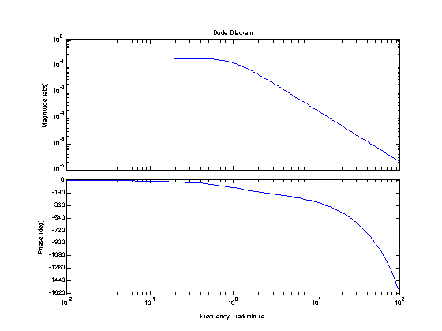
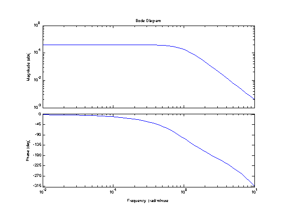

Bode Plots
File: Ch14_BodePlot.m
Contents
How to Specify a Transfer Function
Gp = tf([0.2],[1 1.5 1],'OutputDelay',0.25,'TimeUnit','minutes')
Gp =
0.2
exp(-0.25*s) * ---------------
s^2 + 1.5 s + 1
Continuous-time transfer function.
Set plot options
p = bodeoptions; p.MagUnits = 'abs'; p.MagScale = 'log'; p.FreqUnits = 'auto'; bodeplot(Gp,p);
Specify Frequency Range
Sometimes it is useful to control the frequency range which will be displayed on the Bode plot.
w = logspace(-2,1); bodeplot(Gp,w,p);
DIY Bode plots
% Calculate amplitude ratio and phase [AR,phase] = bode(Gp,w); % bode returns multidimensional arrays. Convert to vectors for plotting AR = AR(:); phase = phase(:); % Plot figure(1);clf; subplot(2,1,1); loglog(w,AR); xlabel('Frequency [rad/min]'); ylabel('Amplitude Ratio'); title('Bode plot'); grid; subplot(2,1,2); semilogx(w,phase); xlabel('Frequency [rad/min]'); ylabel('Phase [deg]'); grid; % Draw line for finding cross-over frequency hold on; ax = axis; plot(ax(1:2),[-180;-180],'r--'); hold off